Alongside the er_plot()/er_vpc()
mini-grammars covered in the other articles, erplots supplies a third,
separate mini-grammar built around er_tte() for
Kaplan-Meier/survival-over-time figures. It has a different coordinate
system to the other two: time on the x-axis, survival probability on the
y-axis, rather than exposure-vs-response. er_tte() itself
computes the Kaplan-Meier estimate once
(survival::survfit()), and every layer added afterwards
reads from that shared fit rather than recomputing it. As with
er_plot()/er_vpc(), nothing is drawn until at
least one er_tte_add_*() layer has been added and the
pipeline is plotted.
This article uses the lung dataset from the survival
package throughout, treating status == 2 as the event
indicator (the dataset codes 1 = censored, 2 =
dead).
A single curve
The minimal pipeline is er_tte() followed by
er_tte_add_curve(), which draws the Kaplan-Meier step curve
with a confidence band:
lung |>
er_tte(time, status == 2) |>
er_tte_add_curve() |>
plot()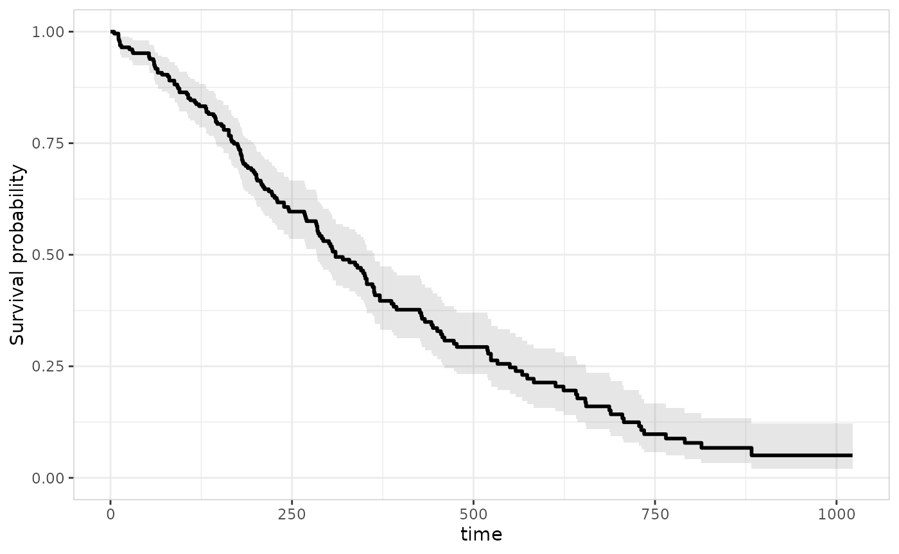
er_tte_add_censor() adds a tick mark at every censoring
time, layered on top of the curve:
lung |>
er_tte(time, status == 2) |>
er_tte_add_curve() |>
er_tte_add_censor() |>
plot()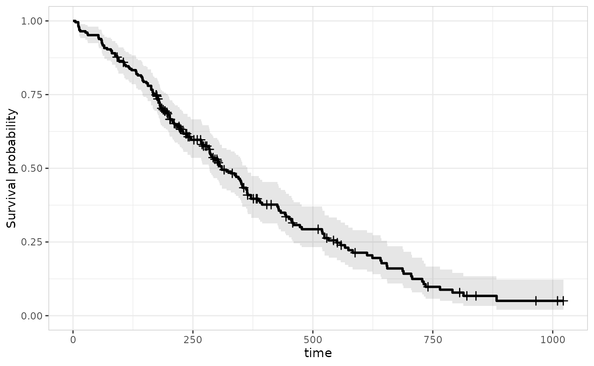
er_tte_add_risktable() adds a number-at-risk panel,
stacked below the curve via patchwork, with a shared x-axis:
lung |>
er_tte(time, status == 2) |>
er_tte_add_curve() |>
er_tte_add_censor() |>
er_tte_add_risktable() |>
plot()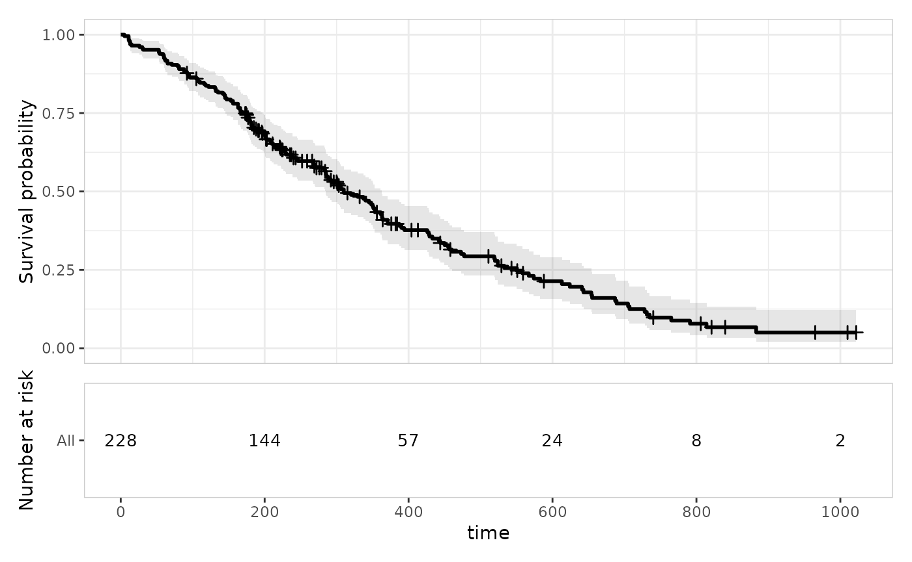
Stratified curves
Passing stratify_by to er_tte() splits the
Kaplan-Meier estimate into one curve per level
(survival::survfit(... ~ strata)), and every layer added
afterwards follows suit. stratify_by must name a
discrete/categorical variable – lung$sex is coded
numerically (1/2), so we convert it to a factor first:
lung_sex <- lung |> transform(sex = factor(sex, labels = c("Male", "Female")))
lung_sex |>
er_tte(time, status == 2, stratify_by = sex) |>
er_tte_add_curve() |>
er_tte_add_censor() |>
er_tte_add_risktable() |>
plot()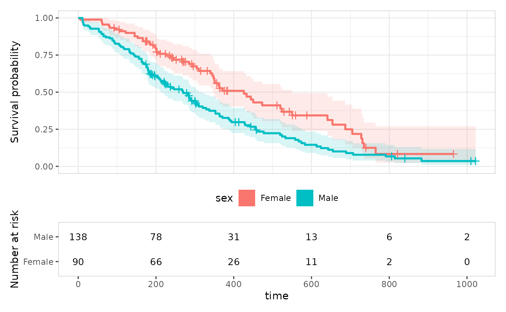
A genuinely continuous covariate, like age, needs
binning into groups first – cut_quantile() gives full
control over bin count, tie-breaking, and labels:
lung |>
transform(age_grp = cut_quantile(age, n = 3)) |>
er_tte(time, status == 2, stratify_by = age_grp) |>
er_tte_add_curve() |>
plot()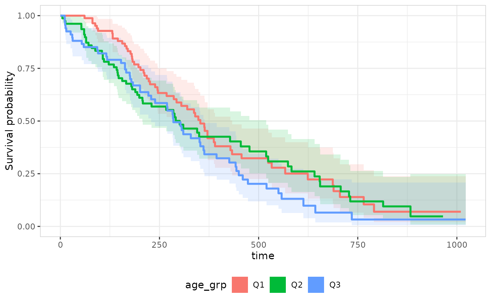
Summary annotation
er_tte_add_summary() adds a corner-placed text/label
annotation. Its default style,
er_style_tte_summary_logrank(), compares survival across
stratify_by’s levels (survival::survdiff());
on an unstratified object, or one with only 1 stratum level present in
the data, it simply draws nothing (a log-rank test needs at least two
groups to compare) rather than erroring:
lung_sex |>
er_tte(time, status == 2, stratify_by = sex) |>
er_tte_add_curve() |>
er_tte_add_summary() |>
plot()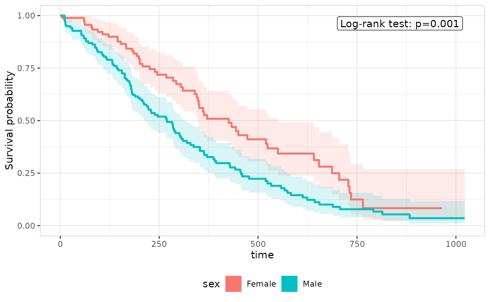
Other builders don’t depend on stratify_by at all.
er_style_tte_summary_n() draws subject/event counts (one
line per stratum when stratified, a single overall line otherwise):
lung |>
er_tte(time, status == 2) |>
er_tte_add_curve() |>
er_tte_add_summary(style = er_style_tte_summary_n) |>
plot()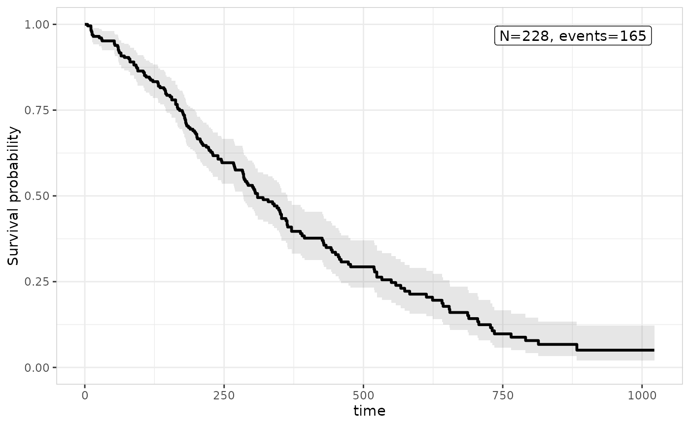
er_style_tte_summary_coefficients()/er_style_tte_summary_gof()
draw from a fitted model’s own er_summary() result instead,
passed via er_tte_add_summary()’s model
argument – independent of whatever model, if any, was passed to
er_tte_add_model(). See Implementing the model interface for
what a model needs to implement to support this.
Overlaying a parametric model
er_tte_add_model() overlays a fitted parametric
curve (with an uncertainty band) on top of the Kaplan-Meier estimate,
for any model implementing er_predict_survival() (see Implementing the model interface). This
article uses ertte, the package that implements the full
model interface for time-to-event models, fitting an accelerated failure
time model:
mod <- ertte_aft(Surv(time, status == 2) ~ sex, lung_sex)
lung_sex |>
er_tte(time, status == 2, stratify_by = sex) |>
er_tte_add_curve() |>
er_tte_add_model(mod) |>
plot()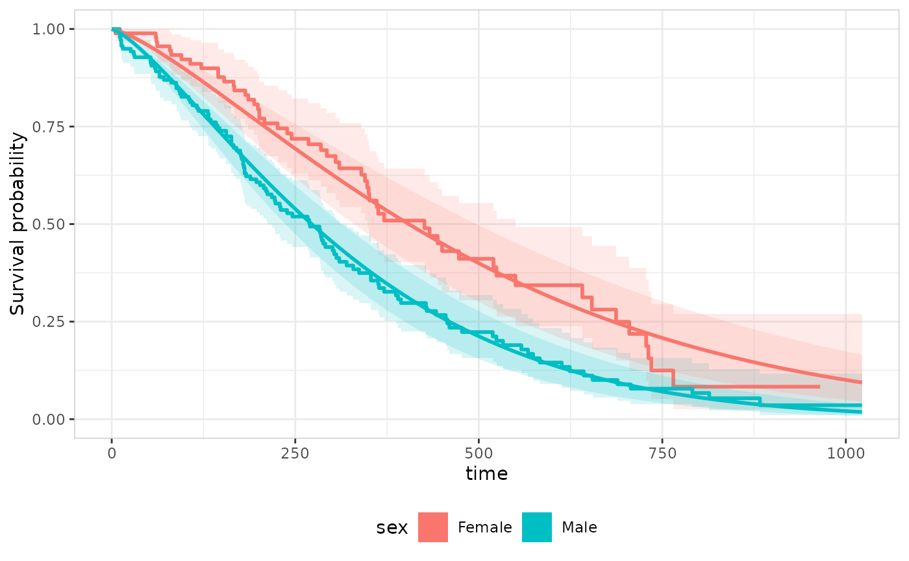
model may reference covariates beyond the strata
variable; erplots fills any other covariate from the plot data with a
reference value (first factor level or numeric mean), the same approach
er_plot_add_model() uses. A Cox model works the same way,
and doesn’t require stratify_by to be set at all:
mod_cox <- ertte_coxph(Surv(time, status == 2) ~ age, lung)
lung |>
er_tte(time, status == 2) |>
er_tte_add_curve() |>
er_tte_add_model(mod_cox) |>
plot()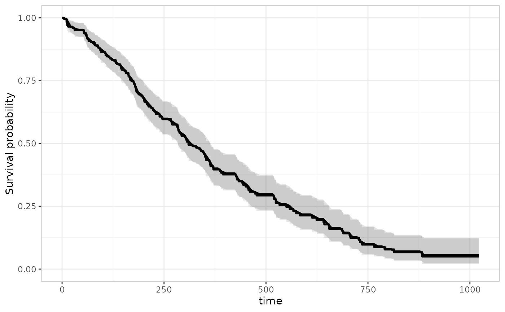
Since age isn’t a stratification variable here,
er_tte_add_model() predicts S(t) at
age’s mean value from the plot data – a single overlay
curve, rather than one per stratum.
Theming
er_tte_theme() adjusts labels, titles, axis limits, and
the overall ggplot2 theme, without changing which variable drives which
aesthetic. As with
er_plot_theme()/er_vpc_theme(), every argument
defaults to NULL (“leave unchanged”), so repeated calls
only touch the fields they supply:
lung_sex |>
er_tte(time, status == 2, stratify_by = sex) |>
er_tte_add_curve() |>
er_tte_add_summary() |>
er_tte_theme(
xlab = "Days",
ylab = "Overall survival",
strata_lab = "Sex",
title = "Kaplan-Meier estimate of overall survival",
theme_base = ggplot2::theme_minimal()
) |>
plot()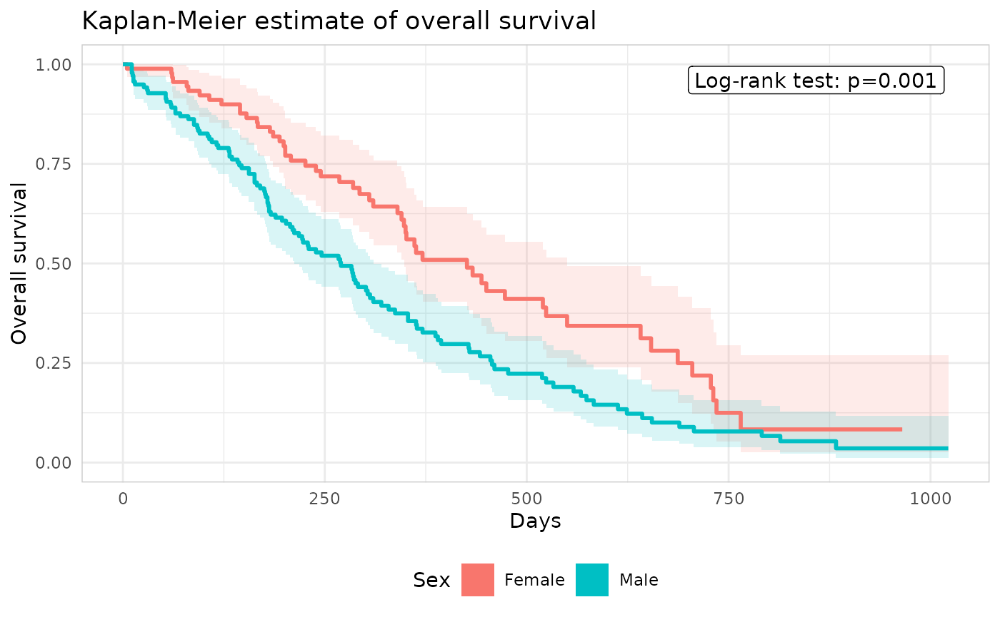
subtitle/caption add further plot-level
text, and ylim overrides the survival-probability axis’s
displayed range – purely cosmetic, since a survival probability is
always modelled on [0, 1] regardless of what’s shown:
lung_sex |>
er_tte(time, status == 2, stratify_by = sex) |>
er_tte_add_curve() |>
er_tte_theme(
subtitle = "Lung cancer cohort",
caption = "Source: survival::lung",
ylim = c(0, 1.05)
) |>
plot()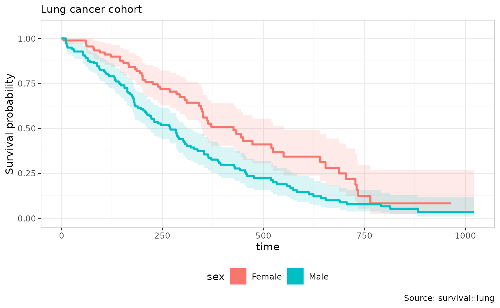
One theming argument is structural rather than purely cosmetic,
unlike ylim above: xlim overwrites the time
axis’s limits directly, and those limits are what
er_tte_add_model()’s default time_grid and
er_tte_add_risktable()’s default times are
computed from at add-layer time. So
er_tte_theme(xlim = ...) needs to be called before those
layers to affect their defaults – calling it afterwards only changes the
curve panel’s own displayed range:
lung |>
er_tte(time, status == 2) |>
er_tte_theme(xlim = c(0, 600)) |>
er_tte_add_curve() |>
er_tte_add_risktable() |>
plot()
#> Warning: Removed 24 rows containing missing values or values outside the scale range
#> (`geom_step()`).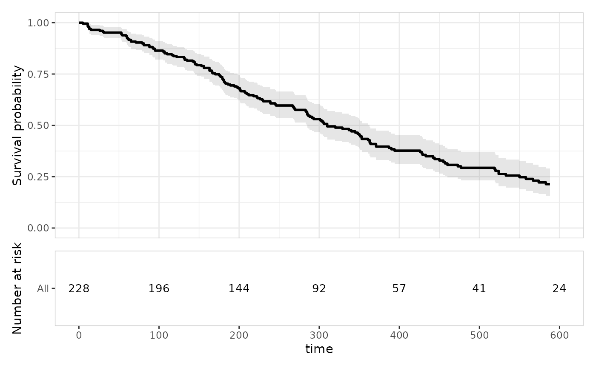
format_p controls how the log-rank annotation’s p-value
is displayed:
lung_sex |>
er_tte(time, status == 2, stratify_by = sex) |>
er_tte_add_curve() |>
er_tte_add_summary() |>
er_tte_theme(format_p = scales::label_pvalue(accuracy = 0.0001, add_p = TRUE)) |>
plot()draw_key swaps the legend glyph the curve/model layers
use, e.g. a point instead of the default filled rectangle:
lung_sex |>
er_tte(time, status == 2, stratify_by = sex) |>
er_tte_add_curve() |>
er_tte_theme(draw_key = ggplot2::draw_key_point) |>
plot()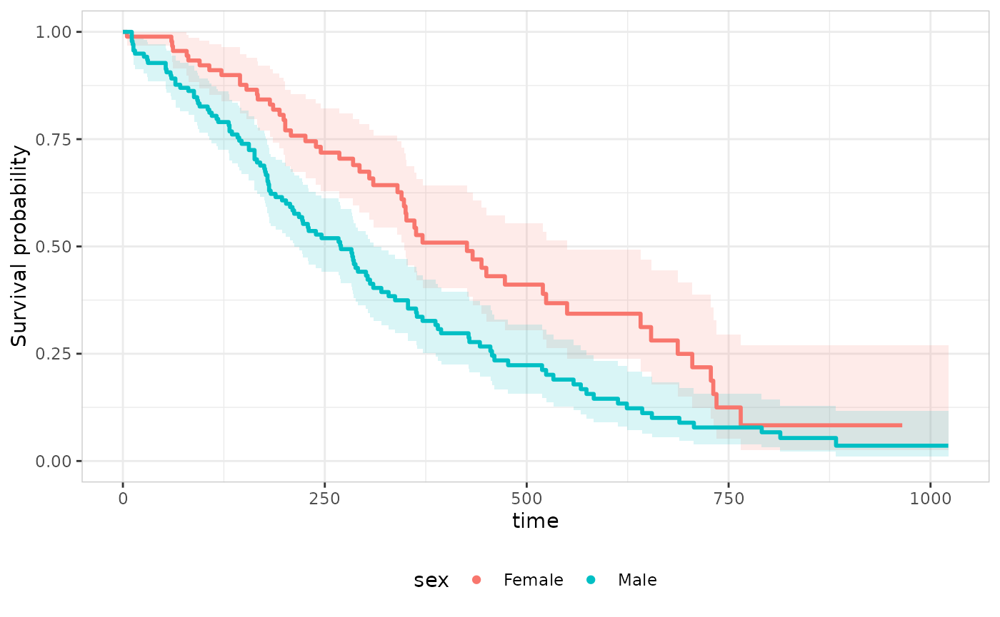
height_curve/height_risktable set the
relative heights patchwork gives to the two stacked panels once
er_tte_add_risktable() is in play – supplying only one
leaves the other unchanged:
lung |>
er_tte(time, status == 2) |>
er_tte_add_curve() |>
er_tte_add_risktable() |>
er_tte_theme(height_curve = 3, height_risktable = 2) |>
plot()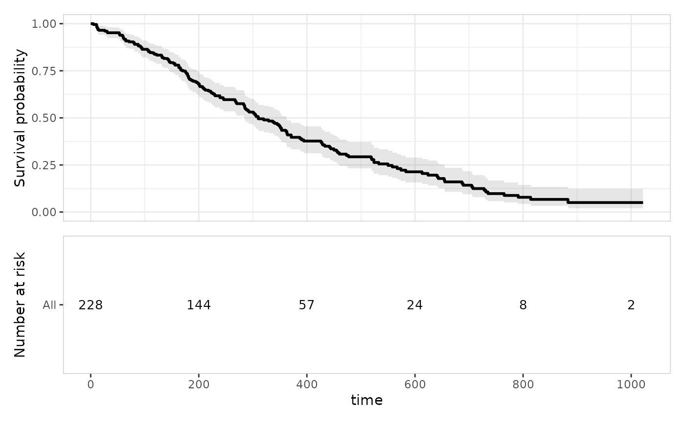
format_percent formats a value as a percentage; pass
show_percent = TRUE to
er_style_tte_risktable_text() to display each break’s
number at risk as a percentage of its stratum’s own baseline (time-zero)
size, alongside the bare count:
lung |>
er_tte(time, status == 2) |>
er_tte_add_curve() |>
er_tte_add_risktable(style = er_style_tte_risktable_text, show_percent = TRUE) |>
plot()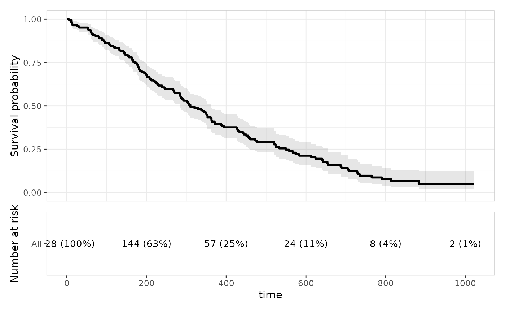
For anything er_tte_theme() doesn’t cover,
+ ggplot2::theme(...)/+ ggplot2::labs(...)
remains the general-purpose escape hatch on the ggplot2 object
plot() returns – though note that once
er_tte_add_risktable() is in play, the result is a
patchwork composition of two panels rather than a single ggplot2 object,
so such additions only apply to the top-level object, not automatically
to both panels.